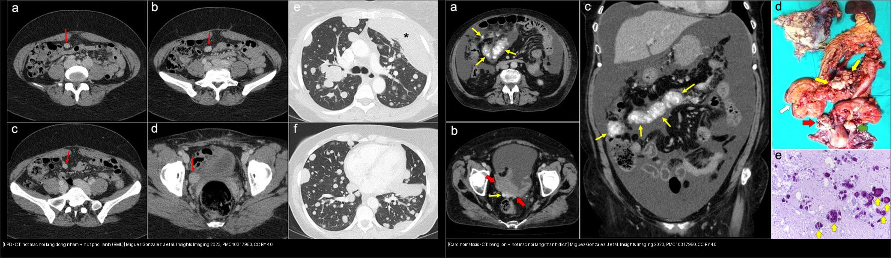
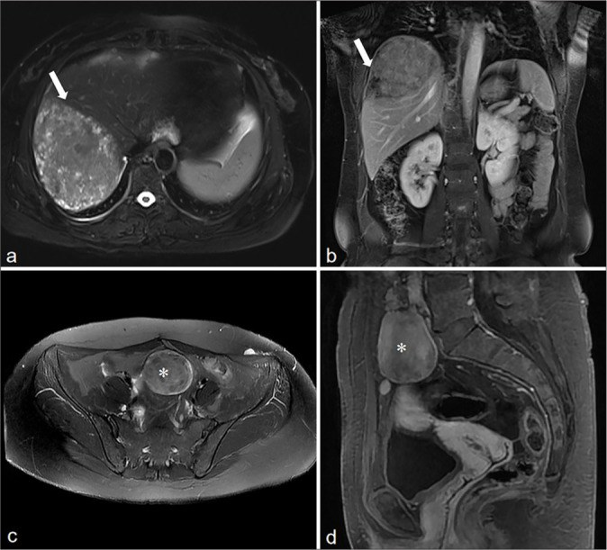
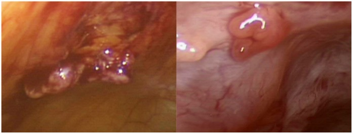
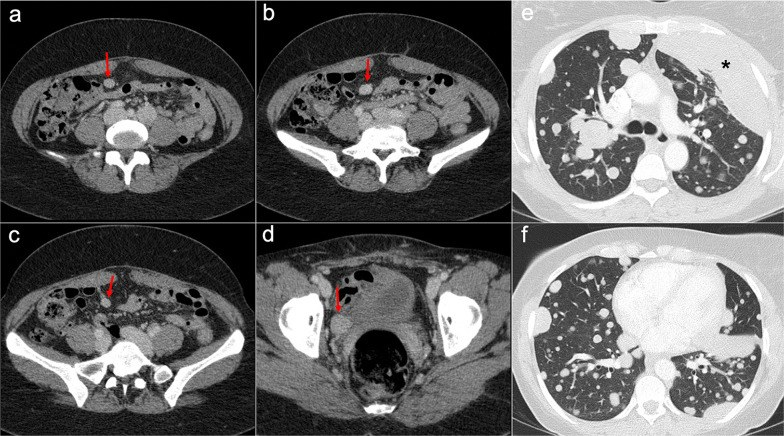

518 — Morcellation & leiomyomatosis peritonealis disseminata (LPD) / Cắt nhỏ u xơ & u cơ trơn lan tỏa phúc mạc
Tags: pattern:gieo-rac-phuc-mac pattern:khoi-co-tu-cung vung:phuc-mac protocol:morcellation incidentaloma:not-phuc-mac
Mức chắc chắn (certainty): tổng hợp y văn (literature synthesis) — nhóm tự biên từ các case series/logistics CC BY và CC BY-NC-SA (PLoS One 2012; Medicine 2020; Insights Imaging 2023; J Clin Imaging Sci 2025); gồm ca nguyên văn có hình.
1. Tổng quan bệnh học – cơ chế hình ảnh
- Morcellation (cắt nhỏ u qua nội soi) là gì và vì sao nguy hiểm: u xơ được cắt thành mảnh nhỏ để lấy ra qua lỗ trocar. Nếu khối "tưởng là u xơ" thực ra là sarcoma/STUMP/u xơ không điển hình, các mảnh cơ trơn gieo rắc khắp phúc mạc → mọc thành nốt rải rác, tiên lượng xấu hơn nhiều so với cắt nguyên khối.
- Bằng chứng định lượng — mổ cắt nhỏ (Seidman 2012, Brigham & Women's, 1091 lượt power morcellation 2005–2010):
- 1,2% có chẩn đoán bất ngờ (u xơ biến thể / u cơ trơn không điển hình / ác tính) — gồm 1 ESS, 1 u xơ tế bào, 6 u xơ không điển hình, 3 STUMP, 1 LMS.
- Tần suất sarcoma bất ngờ = 0,09% — gấp 9 lần con số thường được tư vấn trước mổ.
- Ở các ca theo dõi lại: gieo rắc phúc mạc gặp 64,3% các u ác/không điển hình.
- Hệ quả: FDA 2014 khuyến cáo không dùng power morcellation ở phụ nữ ≥ 50 tuổi hoặc tiền/hậu mãn kinh (nhóm nguy cơ sarcoma cao hơn) → chuyển sang morcellation trong túi (in-bag) hoặc mổ hở/lấy nguyên khối.
- LPD (leiomyomatosis peritonealis disseminata): nốt cơ trơn lành tính rải rác phúc mạc, tiểu khung và mạc nối — thường ở nữ tiền mãn kinh, liên quan chặt với morcellation/myomectomy trước đó (He 2025: 7/10 ca có tiền sử mổ u xơ; Yang 2020: 3 ca mổ nội soi cắt u xơ cách 3, 8, 14 năm). Cơ chế: tế bào cơ trơn bị gieo rắc + phụ thuộc hormone (progesterone receptor +) → nốt to lên khi nội tiết mạnh.
- TẠI SAO hình ảnh giống u xơ (và vì sao dễ nhầm ung thư): nốt LPD bản chất là cơ trơn lành → tín hiệu và kiểu ngấm GIỐNG u xơ/cơ tử cung (T2 tối, ngấm đồng nhất không hoại tử). Nhưng vì nằm rải rác nhiều ổ ở phúc mạc/mạc nối, dễ bị gọi nhầm "carcinomatosis phúc mạc" (di căn) — vốn khác hẳn về tín hiệu, dịch báng và tiên lượng.
- Ngưỡng định lượng bắt buộc:
- LPD: số tổn thương ≥ 2, đa ổ, hầu hết tròn/hơi tròn, bờ rõ nhẵn, không xâm lấn nhu mô tạng kế cận, kích thước ~1,5–16,8 cm (He 2025, n=10); vị trí hay gặp: tiểu khung 6/10, thành bụng 6/10, mạc nối 5/10, thành ruột 3/10.
- Dịch trong tiểu khung lượng ít (7/10) — không có báng lượng lớn / bánh mạc nối. Đây là mấu chốt tách khỏi carcinomatosis.
- Nốt phổi lành tính kèm theo (BML — benign metastasizing leiomyoma) có bờ rõ, đối xứng hai bên, giả ung thư (Miguez González 2023).
- Chẩn đoán xác định = MÔ BỆNH HỌC (sinh thiết nốt), không dựa hình ảnh đơn thuần.
2. Mẫu hình + chẩn đoán phân biệt theo vị trí (gamut)
- Mẫu hình "nốt đặc đa ổ phúc mạc ở nữ tiền mãn kinh có tiền sử mổ u xơ": nghĩ LPD / leiomyomatosis trước carcinomatosis.
- Ba câu hỏi gỡ rối: (1) có báng lượng lớn + bánh mạc nối không? (2) tín hiệu/ngấm có giống cơ–u xơ không? (3) tiền sử morcellation/myomectomy?
- Theo vị trí:
- Mạc nối / mạc treo: LPD → nốt tròn rõ bờ; carcinomatosis → bánh mạc nối (omental cake) + thâm nhiễm mỡ dạng sợi.
- Mặt gan–lách: LPD → nốt gọn; carcinomatosis/PMP → "khía" (scalloping) mặt tạng (xem bài 539).
- Thành bụng (dưới rốn/vết trocar): nốt cơ trơn cấy ở vết mổ cũ — gợi ý morcellation trước đó.
- Tiểu khung (túi cùng trực tràng–tử cung): nốt LPD bờ rõ, không xâm lấn trực tràng.
- Gamut chính: LPD/leiomyomatosis rải rác · parasitic leiomyoma (u xơ "kí sinh" mất liên hệ tử cung) · benign metastasizing leiomyoma (BML) (nốt phổi lành) · disseminated peritoneal leiomyomatosis sau morcellation · carcinomatosis phúc mạc (buồng trứng/dạ dày/đại tràng) · peritoneal sarcomatosis · lymphoma phúc mạc · lao phúc mạc · u trung biểu mô (mesothelioma) · viêm mô mỡ mạc treo.
3. Bảng so sánh phân biệt (ma trận đối chiếu)
| Thực thể (entity) | Hình ảnh điển hình | Chốt vào (rule-in) | Chốt loại (rule-out) | Gợi ý xác nhận |
|---|---|---|---|---|
| LPD / leiomyomatosis rải rác | Nốt đặc tròn, bờ rõ nhẵn, tín hiệu + ngấm GIỐNG u xơ/cơ tử cung, không xâm lấn tạng | Tiền sử morcellation/myomectomy + nốt giống u xơ + báng ÍT | Báng lớn + bánh mạc nối + "khía" → carcinomatosis | Sinh thiết nốt (mô bệnh học = cơ trơn lành; PR+) |
| Parasitic leiomyoma | Nốt cơ trơn mất liên hệ với tử cung, bờ rõ | Nốt cơ trơn "rời" tử cung + tín hiệu u xơ | Nốt thâm nhiễm bờ không rõ → nghĩ ác | So phim cũ; mô bệnh |
| BML (nốt phổi lành) | Nốt phổi hai bên, bờ rõ, kèm nốt phúc mạc | Nốt phổi đối xứng + tiền sử u xơ + nốt phúc mạc | Nốt phổi bờ gai/đơn độc → di căn thật | Sinh thiết nốt phổi/màng phổi |
| Carcinomatosis phúc mạc | Báng lượng lớn, bánh mạc nối, nốt confluent, "khía" mặt gan–lách | Báng lớn + bánh mạc nối + nốt xâm lấn | Nốt rời rạc giống u xơ + báng ít → LPD | CT/MRI + CA-125; mô bệnh |
| Peritoneal sarcomatosis | Nốt mạch hóa, đa ổ, bờ không rõ | Nốt ngấm mạnh + bối cảnh sarcoma/LMS | Nốt đồng nhất ngấm như cơ → LPD | Mô bệnh; so với LMS nguyên phát |
| Lao phúc mạc | Thành phúc mạc dày, hạch hoại tử, báng tỷ trọng cao | Báng + dày phúc mạc lan tỏa + hạch vôi/hoại tử | Nốt đặc giống cơ → LPD | PCR/ADA dịch; sinh thiết |
| Lymphoma phúc mạc | Bánh mạc nối/hạch lớn, ngấm đồng nhất | Hạch to + thâm nhiễm mạc nối không hoại tử | Nốt nhỏ rời giống u xơ → LPD | Sinh thiết hạch/mô mỡ |

Trái: LPD — nốt mạc nối mạc treo ngấm đồng nhất như cơ + nốt phổi bờ rõ (BML) ở ca có tiền sử cắt tử cung vì u xơ. Phải: carcinomatosis phúc mạc (K buồng trứng thanh dịch độ cao) — báng lượng lớn + bánh mạc nối + hạch/mạc nối confluent + vôi hóa dạng thể cát. Nguồn: Miguez González J et al., Insights into Imaging 2023 (PMC10317950), CC BY 4.0. Ảnh ghép letterbox, giữ nguyên tỷ lệ.Dấu hiệu chốt then chốt
- "Nốt giống u xơ nhưng rải rác khắp phúc mạc" + báng ít = LPD, KHÔNG phải carcinomatosis.
- Tiền sử morcellation/myomectomy là manh mối vàng (He 2025: 7/10; Yang 2020: cả 3 ca).
- Nốt ở vết trocar/thành bụng dưới rốn → nghĩ cấy cơ trơn sau cắt nhỏ.
4. Protocol chụp + hệ phân độ/điểm chuẩn hóa
- Khi nào chụp: nữ có tiền sử mổ u xơ/morcellation, sau đó đau bụng/khoi nốt/tình cờ trên CT → CT bụng–chậu có cản quang thì cổng (portal) là bước đầu; MRI (T2W + T1W fat-sat + DWI + DCE) khi cần phân biệt tín hiệu và lên kế hoạch mổ.
- Đặc điểm cần báo cáo: số nốt (≥ 2), vị trí (tiểu khung/thành bụng/mạc nối/mạc treo), kích thước, bờ, tín hiệu so với cơ tử cung, kiểu ngấm, lượng dịch, có bánh mạc nối/khía mặt tạng không.
- Trước mọi morcellation (tầm soát sarcoma): nếu khối không điển hình (T2/DWI sáng, ADC ≤ 0,9, lớn nhanh, mãn kinh) → KHÔNG cắt nhỏ (xem bài 526); nếu vẫn cắt nhỏ → dùng túi (in-bag).
- Xử trí LPD (không phải RADS, mà là nguyên tắc):
- Sinh thiết xác nhận lành trước khi điều trị lớn.
- Không triệu chứng + đã xác nhận lành: theo dõi có thể chấp nhận.
- Có triệu chứng/không chắc chắn: phẫu thuật (với người không còn nhu cầu sinh sản: cắt tử cung + phần phụ + giảm khối).
- Muốn bảo tồn sinh sản: bóc nốt + đồng vận GnRH / nội tiết (LPD phụ thuộc hormone) — nhưng tái phát có thể gặp, cần theo dõi.
flowchart TD
A[Not dac da o phuc mac o nu co tien su mo u xo] --> B{Co bang luong lon + banh mac noi + khia mat tang?}
B -->|Co| C[Nghi carcinomatosis/PMP -> CA-125, sinh thiet, PET]
B -->|Khong, bang it + not giong u xo| D["LPD / parasitic leiomyoma (nghi nhat)"]
D --> E{Sinh thiet not co tron lanh tinh?}
E -->|Co| F{Co trieu chung?}
E -->|Khong| C
F -->|Khong| G[Theo doi dinh ky]
F -->|Co + khong can sinh san| H[Cat tu cung + phan phu + giam khoi]
F -->|Co + muon sinh san| I[Boc not + dong van GnRH, theo doi tai phat]
A -.-> J{Truoc morcellation khoi khong dien hinh?}
J -->|Co ADC <= 0,9 / T2-DWI sang| K[CAM morcellation -> mo nguyen khoi]
J -->|Khong chac| L[Morcellation trong tui in-bag]
5. Biến thể bình thường và cạm bẫy
- LPD bị gọi nhầm "di căn phúc mạc" → điều trị ung thư oan: phân biệt bằng báng ít + nốt tín hiệu/ngấm giống cơ + tiền sử morcellation; xác nhận bằng mô bệnh học.
- U xơ "kí sinh" (parasitic leiomyoma) đơn độc sau morcellation có thể bị nhầm khối ác mạc treo — cùng cứu bằng bờ rõ + tín hiệu u xơ.
- BML (nốt phổi lành) dễ bị gọi di căn phổi → bờ rõ, hai bên, kèm nốt phúc mạc cùng bản chất là gợi ý.
- Không gọi "u xơ tái phát" rồi mổ lại không cần thiết khi thực ra là LPD lan tỏa — cần CT/MRI toàn bụng + mô bệnh trước.
- Cạm bẫy mặt cắt (pitfall): trên CT ngang, nốt mạc nối nhỏ dễ bỏ sót do trượt lát — đọc cả thì cổng + đa bình diện; phân biệt dịch màng phổi vs cổ trướng bằng dấu crus lệch (xem ghi chú hệ Bụng).
6. Tự lượng giá — Blind Quiz ngay trên trang tĩnh
Ca 1 — Nữ 54 tuổi, tiền sử mổ nội soi u xơ > 10 năm, phát hiện nốt gan + nốt bụng–chậu. Nhìn MRI, mô tả trước.

- Gợi ý lâm sàng (clinical context): 54 tuổi, tiền sử laparoscopic myoma resection.
- Câu hỏi: Nốt gan và nốt bụng–chậu có đặc điểm gì chung? Gợi ý chẩn đoán lành hay ác?
Bấm để hiện đáp án (findings + chẩn đoán)
- Dấu hiệu (findings): khối tăng tín hiệu nhẹ trên T2W ở gan bờ nhẵn (mũi tên), ngấm không đồng nhất; các khối mô mềm ở bụng và tiểu khung (*) có cùng tín hiệu và cùng kiểu ngấm như tổn thương gan.
- Chẩn đoán (diagnosis): LPD (leiomyomatosis peritonealis disseminata) sau morcellation — các nốt cùng bản chất cơ trơn lành, tín hiệu/ngấm giống u xơ. Xác nhận bằng mô bệnh; tìm nốt phổi BML kèm.
- Nguồn ảnh: He X et al., J Clin Imaging Sci 2025, PMC11801444, Fig. 1, CC BY-NC-SA 4.0 (nguyên bản, không crop/ghép).
Ca 2 — Ảnh ghép: nốt rải rác phúc mạc ở hai bệnh nhân. Bên nào LPD, bên nào carcinomatosis?
- Gợi ý lâm sàng: một ca tiền sử cắt tử cung vì u xơ; một ca K buồng trứng thanh dịch độ cao.
- Câu hỏi: Dấu hiệu nào phân biệt? Điều gì quyết định hướng xử trí?
Bấm để hiện đáp án (findings + chẩn đoán)
- Trái: LPD — nốt mạc nối/mạc treo ngấm đồng nhất như cơ, báng ít, kèm nốt phổi bờ rõ (BML); tiền sử u xơ/cắt tử cung.
- Phải: carcinomatosis phúc mạc — báng lượng lớn + bánh mạc nối + nốt confluent + vôi hóa dạng thể cát; khối phần phụ nguyên phát.
- Chốt: báng lớn + bánh mạc nối + xâm lấn = ác; báng ít + nốt giống u xơ + tiền sử morcellation = LPD (sinh thiết trước khi điều trị).
- Nguồn: Miguez González J et al., Insights into Imaging 2023 (PMC10317950), CC BY 4.0.
Ca 3 — Nốt cơ trơn rải rác nhìn thấy trong mổ sau khi cắt nhỏ u. Ý nghĩa lâm sàng?

- Gợi ý: mổ nội soi cắt u, hình ảnh nội soi thấy nhiều nốt trên mặt phúc mạc.
- Câu hỏi: Cơ chế nào tạo ra các nốt này? Hậu quả nếu u "tưởng lành" thực ra là sarcoma?
Bấm để hiện đáp án (findings + chẩn đoán)
- Dấu hiệu (findings): nhiều nốt trên bề mặt phúc mạc (ảnh trong mổ) sau power morcellation.
- Chẩn đoán/lý giải (diagnosis): gieo rắc mô u do cắt nhỏ — nếu u bất ngờ là sarcoma/STUMP, mảnh gieo rắc tạo nốt phúc mạc (Seidman 2012: gieo rắc 64,3% các ca theo dõi; sarcoma bất ngờ 0,09%, gấp 9 lần tư vấn). Bài học: không cắt nhỏ khối không điển hình (FDA 2014: tránh ở ≥ 50 tuổi/tiền–hậu mãn kinh); nếu buộc phải làm → in-bag.
- Nguồn ảnh: Seidman MA et al., PLoS One 2012, PMC3506532, Fig. 4, CC BY.
Ca 4 — Sau morcellation nhiều năm, nốt phúc mạc + nốt phổi hai bên bờ rõ. Có phải di căn?

- Gợi ý: 51 tuổi, tiền sử u xơ + đã cắt tử cung; chụp ngực tình cờ thấy nốt phổi nhiều ổ.
- Câu hỏi: Nốt phổi giống di căn ung thư không? Bằng gì để xác định bản chất?
Bấm để hiện đáp án (findings + chẩn đoán)
- Dấu hiệu (findings): nốt đặc mạc treo/rốn mạc treo ngấm đồng nhất (mũi tên đỏ, a–d) + nốt phổi/màng phổi hai bên bờ rõ (e, f) — trông như ác tính nhưng lành.
- Chẩn đoán (diagnosis): LPD kèm benign metastasizing leiomyoma (BML) — chẩn đoán xác định bằng sinh thiết khối màng phổi (thùy lưỡi) (dấu hoa thị đen). Chốt: nốt phổi hai bên, bờ rõ + tiền sử u xơ = BML lành, không phải di căn.
- Nguồn ảnh: Miguez González J et al., Insights into Imaging 2023, PMC10317950, Fig. 28, CC BY 4.0.
Bài liên quan chéo
- 500 – Tổng quan Hệ Vú & Sản Phụ khoa
- 520 – U xơ cơ tử cung (FIGO 0–8), adenomyosis & nội mạc
- 526 – Sarcoma tử cung & carcinosarcoma vs u xơ
- 527 – U mô đệm nội mạc tử cung (ESN/LG-ESS/HG-ESS/UUS)
- 535 – Ung thư buồng trứng, phúc mạc & u Krukenberg
- 539 – Pseudomyxoma peritonei & u nhầy ruột thừa
Ảnh
- 5 ảnh gốc (4 CC BY/BY, 1 CC BY-NC-SA) + 1 ảnh ghép CC BY 4.0. Nguồn + giấy phép từng ảnh trong
images/CREDITS.md.
Không dùng để chẩn đoán độc lập khi chưa có người hướng dẫn.